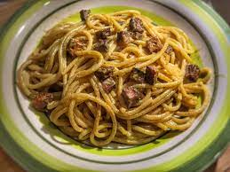

Spaghetti alla carbonara,si ma vegana!!!
Ingredienti
Di seguito sono riportati gli ingredienti:
- 300g di spaghetti
- 4 uova
- 100g di veguanciale
- 100g di parmveg
Preparazione:
- Soffrigere il veguanciale taglialo a dadini
- Sbattere le uova in un tegamino e aggiungere parmveg e pepe
- scolare la pasta e saltarla in padella a fuoco medio
- Versare le uova sbattute e il veguanciale all'interno della pentola con la pasta
- Servire il piatto